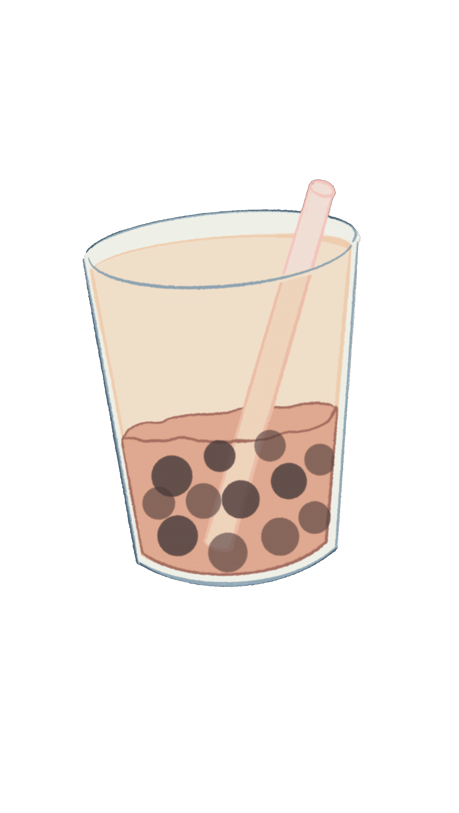

珍珠奶茶作法


準備材料：
珍珠食材：新良木薯澱粉150克，紅糖80克，清水90克，黑糖糖漿適量。
奶茶食材：純牛奶250毫升，清水100克，紅茶5克，細砂糖15克，黑糖糖漿適量。

作法：
1.首先來做珍珠。將清水放入鍋里燒開，放入紅糖燒開至紅糖完全融化。
2.150克木薯澱粉分三次加入，每加一次充分攪拌均勻再放下一次。木薯澱粉中加入紅糖水時一定要快速攪拌。
3.將紅糖木薯粉和成柔軟光滑的麵團。將麵團揉成長條，切成小顆粒。
4.再一個一個揉成小圓球，把所有小珍珠在木薯澱粉中滾一圈，篩去多餘的粉。
5.大火燒開水，將珍珠倒入，攪拌一分鐘防止黏在一起。開大火煮20分鐘，關火再燜5分鐘。
6.將煮好的珍珠撈起，過冰水降溫，再放入黑糖糖漿里，小火熬製粘稠，出鍋。黑珍珠就做好了。
7.鍋里放入細砂糖炒出焦糖色，放入100克細砂糖炒勻。
8.放入5克紅茶煮5分鐘。
9.奶茶杯四周掛上適量黑糖糖漿。
10.舀入做好的黑珍珠，喜歡珍珠的可以多放些。
11.紅茶煮5分鐘後，倒入250毫升純牛奶煮熱即可。
12.將奶茶里的茶葉過濾掉。將濾好的奶茶倒入奶茶杯里。珍珠奶茶就做好了。